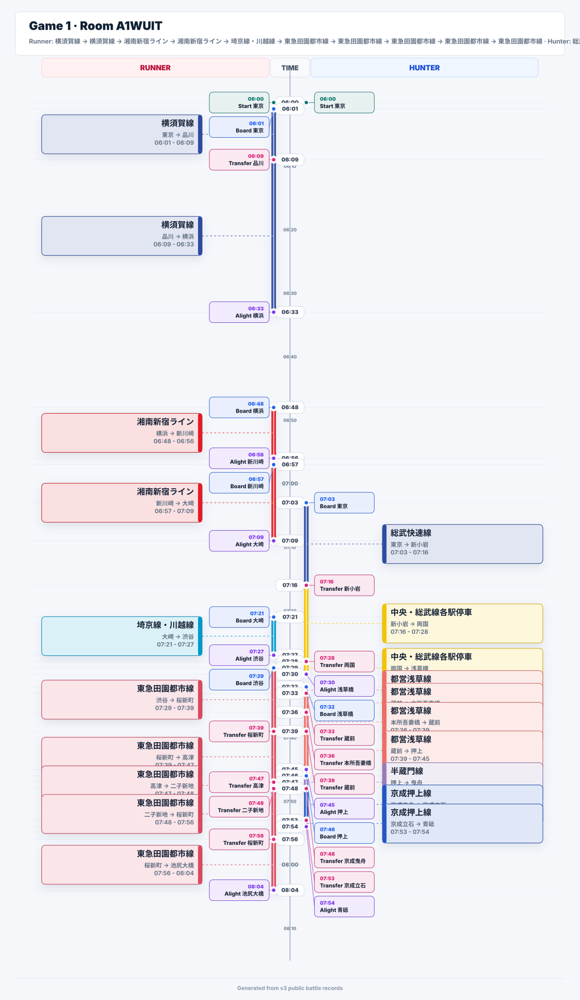
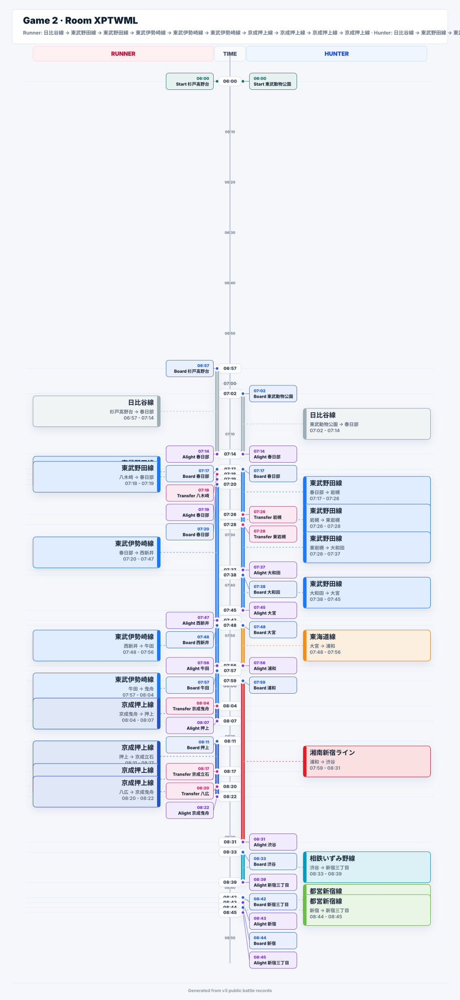
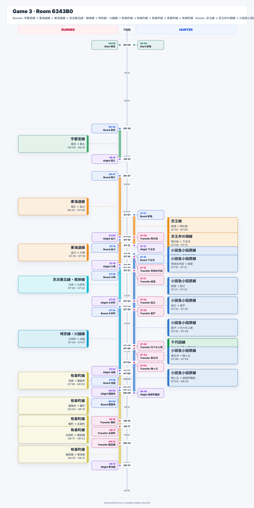
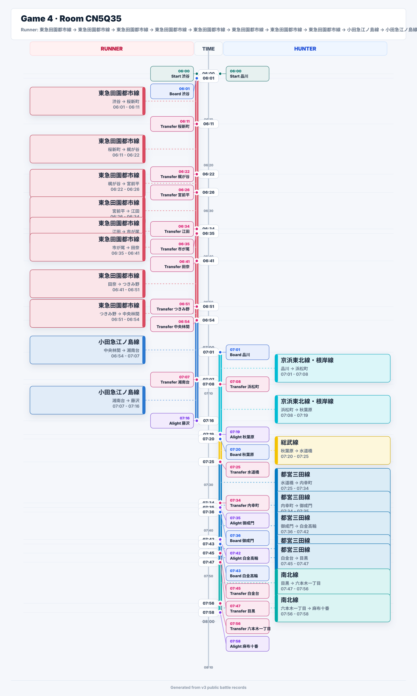
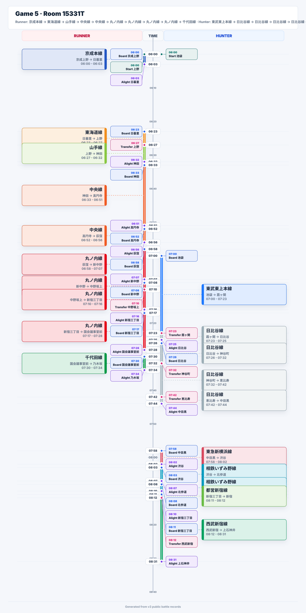
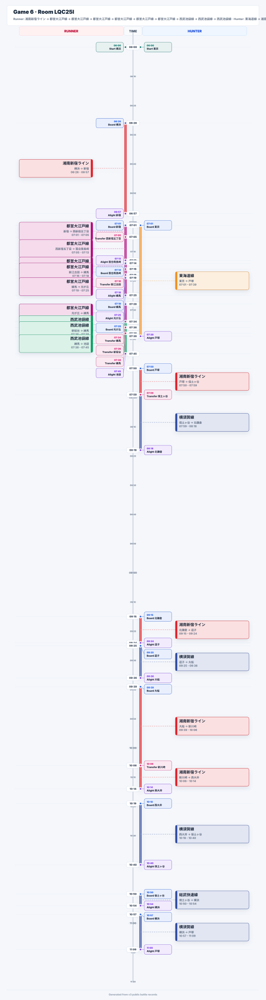
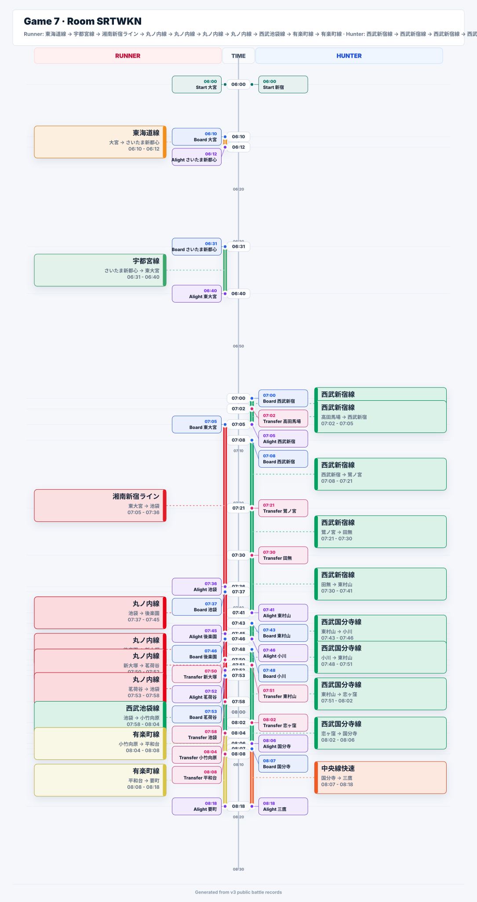
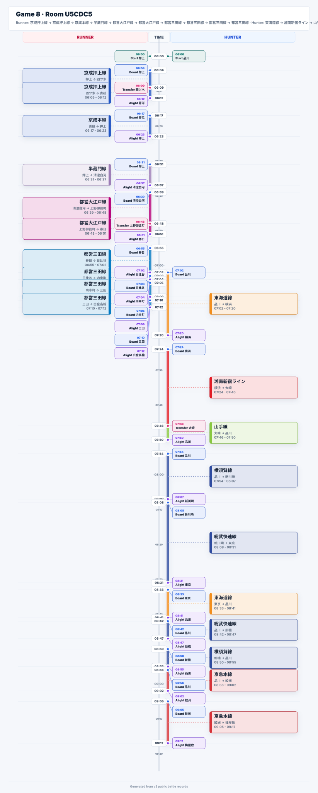
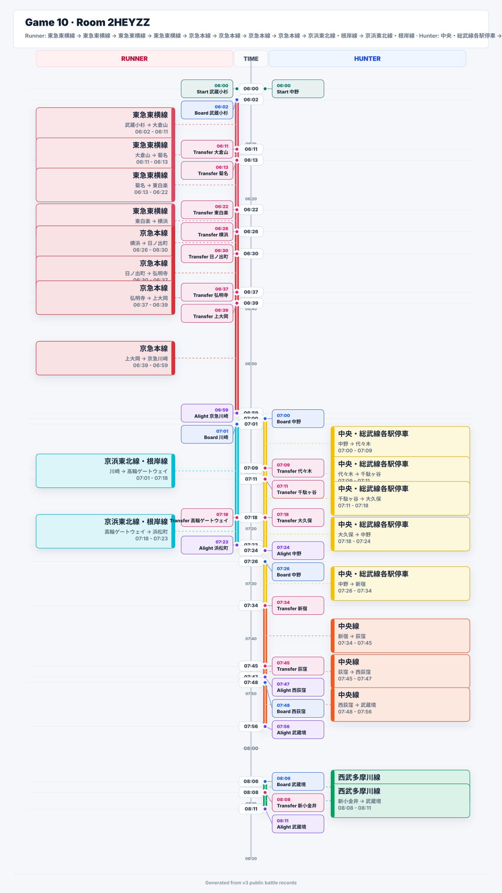

Game 1 · Room A1WUIT
Runner: 横須賀線 -> 横須賀線 -> 湘南新宿ライン -> 湘南新宿ライン -> 埼京線・川越線 -> 東急田園都市線 -> 東急田園都市線 -> 東急田園都市線 -> 東急田園都市線 -> 東急田園都市線 · Hunter: 総武快速線 -> 中央・総武線各駅停車 -> 中央・総武線各駅停車 -> 都営浅草線 -> 都営浅草線 -> 都営浅草線 -> 都営浅草線 -> 半蔵門線 -> 京成押上線 -> 京成押上線 · same_node at 東京 06:00 · phase ENDED

Game 2 · Room XPTWML
Runner: 日比谷線 -> 東武野田線 -> 東武野田線 -> 東武伊勢崎線 -> 東武伊勢崎線 -> 東武伊勢崎線 -> 京成押上線 -> 京成押上線 -> 京成押上線 -> 京成押上線 · Hunter: 日比谷線 -> 東武野田線 -> 東武野田線 -> 東武野田線 -> 東武野田線 -> 東海道線 -> 湘南新宿ライン -> 相鉄いずみ野線 -> 都営新宿線 -> 都営新宿線 · same_train on 日比谷線 07:02 · phase LIVE

Game 3 · Room 6343B0
Runner: 宇都宮線 -> 東海道線 -> 東海道線 -> 京浜東北線・根岸線 -> 埼京線・川越線 -> 有楽町線 -> 有楽町線 -> 有楽町線 -> 有楽町線 -> 有楽町線 · Hunter: 京王線 -> 京王井の頭線 -> 小田急小田原線 -> 小田急小田原線 -> 小田急小田原線 -> 小田急小田原線 -> 小田急小田原線 -> 千代田線 -> 小田急小田原線 -> 小田急小田原線 · phase LIVE

Game 4 · Room CN5Q35
Runner: 東急田園都市線 -> 東急田園都市線 -> 東急田園都市線 -> 東急田園都市線 -> 東急田園都市線 -> 東急田園都市線 -> 東急田園都市線 -> 東急田園都市線 -> 小田急江ノ島線 -> 小田急江ノ島線 · Hunter: 京浜東北線・根岸線 -> 京浜東北線・根岸線 -> 総武線 -> 都営三田線 -> 都営三田線 -> 都営三田線 -> 都営三田線 -> 都営三田線 -> 南北線 -> 南北線 · phase LIVE

Game 5 · Room 15331T
Runner: 京成本線 -> 東海道線 -> 山手線 -> 中央線 -> 中央線 -> 丸ノ内線 -> 丸ノ内線 -> 丸ノ内線 -> 丸ノ内線 -> 千代田線 · Hunter: 東武東上本線 -> 日比谷線 -> 日比谷線 -> 日比谷線 -> 日比谷線 -> 東急新横浜線 -> 相鉄いずみ野線 -> 相鉄いずみ野線 -> 都営新宿線 -> 西武新宿線 · phase LIVE

Game 6 · Room LQC25I
Runner: 湘南新宿ライン -> 都営大江戸線 -> 都営大江戸線 -> 都営大江戸線 -> 都営大江戸線 -> 都営大江戸線 -> 都営大江戸線 -> 西武池袋線 -> 西武池袋線 -> 西武池袋線 · Hunter: 東海道線 -> 湘南新宿ライン -> 横須賀線 -> 湘南新宿ライン -> 横須賀線 -> 湘南新宿ライン -> 湘南新宿ライン -> 横須賀線 -> 総武快速線 -> 横須賀線 · phase LIVE

Game 7 · Room SRTWKN
Runner: 東海道線 -> 宇都宮線 -> 湘南新宿ライン -> 丸ノ内線 -> 丸ノ内線 -> 丸ノ内線 -> 丸ノ内線 -> 西武池袋線 -> 有楽町線 -> 有楽町線 · Hunter: 西武新宿線 -> 西武新宿線 -> 西武新宿線 -> 西武新宿線 -> 西武新宿線 -> 西武国分寺線 -> 西武国分寺線 -> 西武国分寺線 -> 西武国分寺線 -> 中央線快速 · phase LIVE

Game 8 · Room U5CDC5
Runner: 京成押上線 -> 京成押上線 -> 京成本線 -> 半蔵門線 -> 都営大江戸線 -> 都営大江戸線 -> 都営三田線 -> 都営三田線 -> 都営三田線 -> 都営三田線 · Hunter: 東海道線 -> 湘南新宿ライン -> 山手線 -> 横須賀線 -> 総武快速線 -> 東海道線 -> 総武快速線 -> 横須賀線 -> 京急本線 -> 京急本線 · phase LIVE

Game 9 · Room TJAMB5
Runner: 千代田線 -> 京成金町線 -> 京成金町線 -> 京成金町線 -> 京成成田空港線 -> 都営浅草線 -> 都営浅草線 -> 都営浅草線 -> 都営浅草線 -> 銀座線 · Hunter: 半蔵門線 -> 半蔵門線 -> 東急田園都市線 -> 小田急江ノ島線 -> 小田急小田原線 -> 丸ノ内線 -> 小田急小田原線 -> 小田急江ノ島線 -> 湘南新宿ライン -> 東海道線 · phase LIVE

Game 10 · Room 2HEYZZ
Runner: 東急東横線 -> 東急東横線 -> 東急東横線 -> 東急東横線 -> 京急本線 -> 京急本線 -> 京急本線 -> 京急本線 -> 京浜東北線・根岸線 -> 京浜東北線・根岸線 · Hunter: 中央・総武線各駅停車 -> 中央・総武線各駅停車 -> 中央・総武線各駅停車 -> 中央・総武線各駅停車 -> 中央・総武線各駅停車 -> 中央線 -> 中央線 -> 中央線 -> 西武多摩川線 -> 西武多摩川線 · phase LIVE
